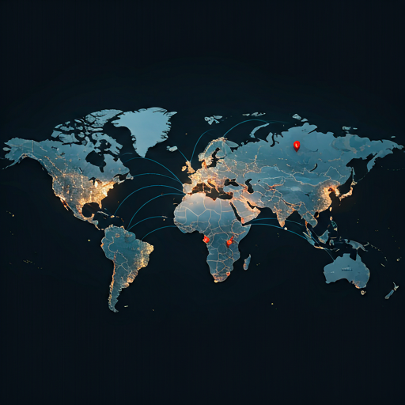

我们建设的是确保结果兑现的实体与数字基础设施，而不只是搬运货物。
Sinoport OS 直接接入机场节点与清关体系，形成无缝衔接的技术控制层。
我们的基础设施围绕“最后一公里承诺”而设计，确保每一次跨境航运都具备确定性。
Sinoport 的承诺兑现模型建立在四个不可妥协的履约标准之上。
通过精准排程和明确起降时窗，保障跨境航空链路的时效兑现。
通过 Sinoport 的智能校验体系，实现单证与货件处理的高精度一致性。
从卡车到停机坪再到货站终端，全链路状态对每个参与方实时可见。
每个节点都对应清晰责任主体，端到端履约链路具备直接归责能力。
国内集货与首公里分拣节点。
在关键机场节点完成清关、组板与出港准备。
覆盖全球关键走廊的高频航空主干链路。
自动拆板、核对与本地清关处理。
面向终端消费者的本地化快速派送。
以战略机场节点连接全球核心经济区域，在本地化执行中落实统一标准和控制深度。
自动化履约与区域中转能力的样板标准。

与全球电商平台和企业系统无缝连接。
通过预测性路径规划和动态节点分配，实现最优流转。
负责执行从仓储到航空履约指令的核心引擎。
面向清关与合规的不可篡改数据账本。
这是 Sinoport 基础设施的技术控制层。我们提供的不只是空间，更是能够精确调度每一个托盘、每一班航班和每一笔清关申报的操作系统。
以程序化方式控制机场内的实体资源。
实时接入分拣线与货舱作业数据。